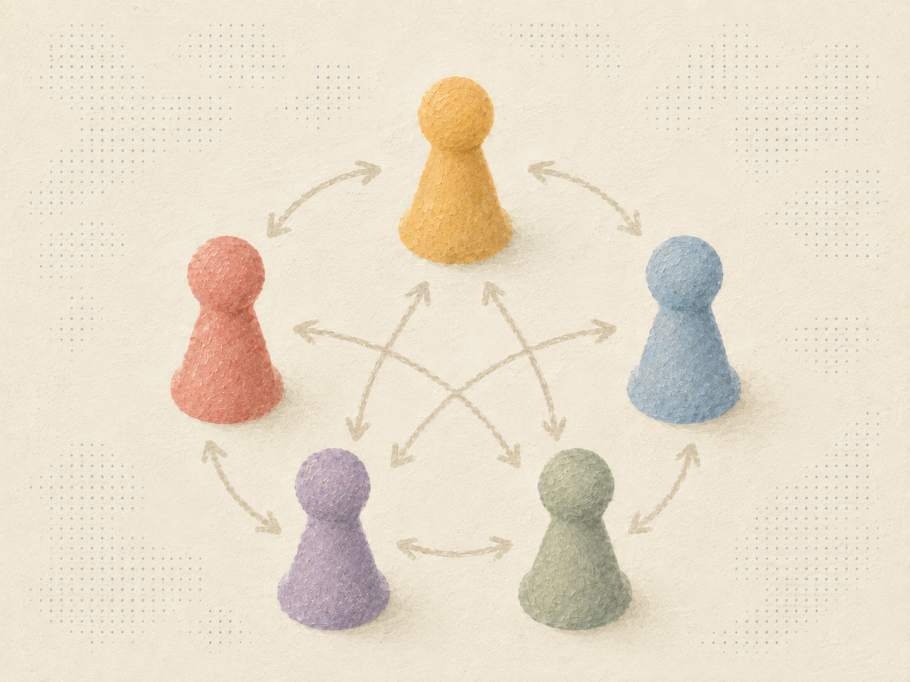

Multiagent Learning
In multiagent systems, each agent's best strategy depends on what the other agents are doing. When multiple agents are learning at the same time, some key questions include:
- Will learning converge to stable behavior, such as game-theoretic equilibria?
- Can agents learn to cooperate and arrive at socially-desirable outcomes?
Applications:
- Building game-playing agents
- Computing equilibria in economies